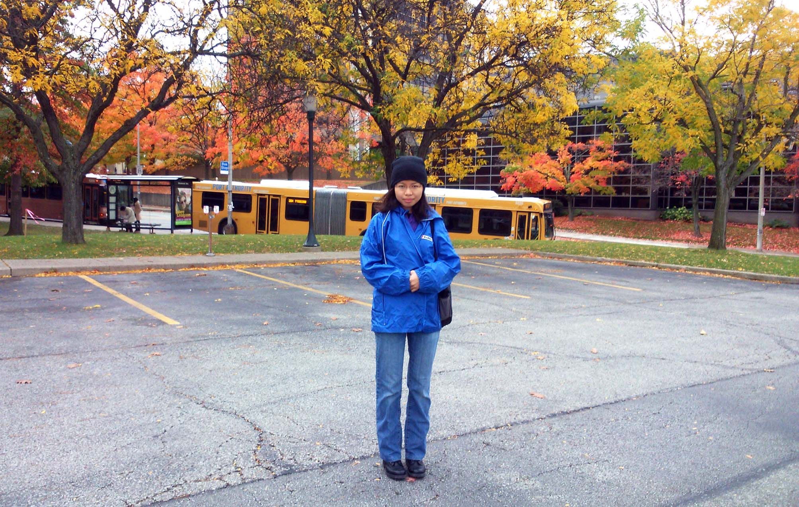
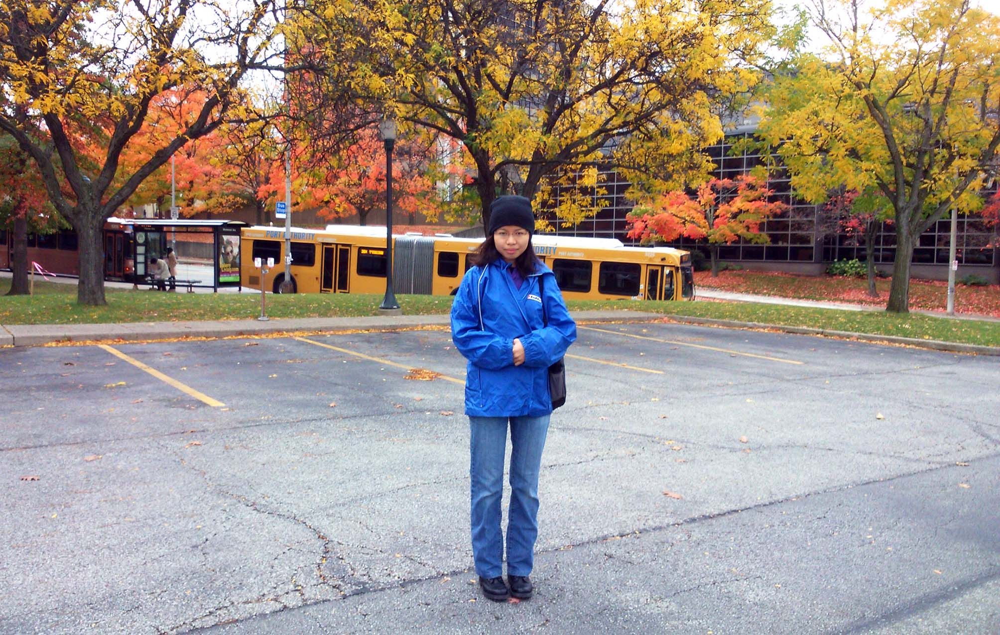

I am a graduate student in the Electrical and Computer Engineering department at Carnegie Mellon University, working on network verification with Professor Limin Jia. Here are my Github and my LinkedIn profiles. I'm part of the CyLab Social Engineering Committee, which organizes social events for members of the CyLab community several times a year. Previously, I studied math and computer science at Stanford University, where I was the treasurer for the Singaporeans at Stanford Society.
Publications
Distributed Provenance Compression.
Chen Chen, Harshal Lehri, Lay Kuan Loh, Anupam Alur, Limin Jia, Wenchao Zhou and Boon Thau Loo.
To appear in SIGMOD/PODS 2017.
Poster: Evaluating the effectiveness of privacy tools using Information Flow Experiments.
Amit Datta, Anupam Datta, Lay Kuan Loh, Michael Carl Tschantz and Zheng Zong.
37th IEEE Symposium on Security and Privacy
Affordances in School Science Research: Narratives from Two Singapore Specialized Science School Students.
Tang Wee Teo, Jia Qian Woo, Lay Kuan Loh.
Interplay of Creativity and Giftedness in Science. SensePublishers, 2016. 203-217.
Automated Verification of Safety Properties in Declarative Networking Programs.
Chen Chen, Lay Kuan Loh, Limin Jia, Wenchao Zhou and Boon Thau Loo.
17th International Symposium on Principles and Practice of Declarative Programming (PPDP), July 2015.
Coursework
Spring 2017
17-665: Program Analysis
Spring 2016
18-732: Secure Software Systems
Fall 2015
18-734: Foundations of Privacy
Spring 2015
15-812: Programming Language Semantics
Teaching Assistant
Fall 2016
18-734/08-604: Foundations of Privacy
Presentations
Carnegie Mellon Cloud Workshop
AT&T Research Academic Summit 2016
PPDP 2015

Awards and Scholarships
January 2017
Programming Languages Mentoring Workshop Scholarship
October 2016
ECE Grace Hopper Essay Contest: Winner
April 2015
Grad Cohort Workshop 2015
Fall 2014 - Spring 2015
Carnegie Institute of Technology Dean's Tuition Fellowship
Summer 2012
Stanford Summer Undergraduate Research Program

Fun Facts
- It took me six tries in three different states to get licensed to drive. Afterwards, I successfully trained two of my friends to obtain their license in Pennsylvania. Each obtained it within two attempts.
- My mother's maiden name is "Na". (No, that's not the answer to any of my security questions.) Once when I was filling in parental information on a form, I was chided for stating that her surname was Not Applicable.
- In college, I rented a room from a landlady who insisted that I clean the bathroom after every use. I moved out after four days. Every roommate I've lived with since then was impressed to see me clean once a week.
Last Updated: April 2017